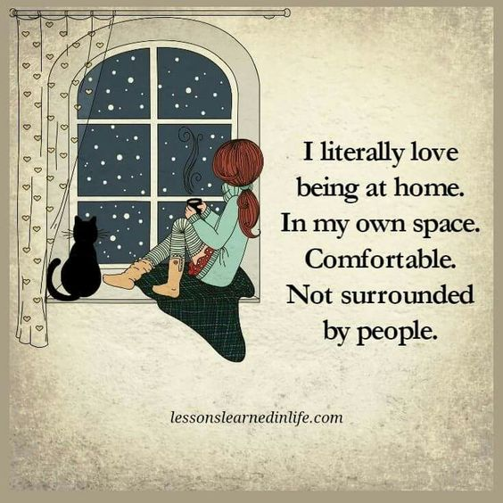

Blog Post #10

Signs that you are an introvert
- You avoid situations wherein you have to interact with a lot of people.
- You have a very selected friends whom you hangout with.
- You listen more and talk less.
- You get lost in a chain of thoughts often.
- You observe things other people ignore, like minute details.
- Telling your feelings is your dilemma. You tend to open up to few people (trusted ones) about your feelings.
- Your favourite pastime is reading and listening to music.
- You go on a social outing depending on the people attending it.
- You prefer to watch movies at home than partying.
- You fear big crowds.
- You keep your circle small because you hate drama.
- You rather date with your phone and browse the net than to hang out with people.
- You don't like to mingle with unfamiliar faces because you are afraid that you get misjudged and misunderstood.